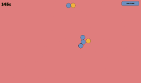
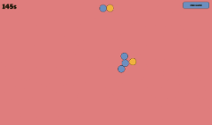
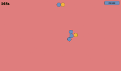

Hey, I'm Ilan Luciano, a passionate software developer and entrepreneur. Throughout my six years of professional experience, I have served as the lead developer of an online gaming platform, taught courses on game development at a STEM summer program, led development of a digital attendance management system, worked with a team to enhance a digital research study management platform, consulted on web development projects for non-profit and business clients, and worked on a handful of passion projects. Some of my professional work and many of my hobby projects are listed below.
In addition to my software development background, I have experience working collaboratively with a team of developers and marketers and communicating professionally and reliably with clients.
I am currently pursuing a bachelors of science at Lehigh University’s Computer Science and Business Honors Program.
The programming languages, technologies, and platforms I have worked with are:
Javascript (both Node and frontend)
HTML and CSS
Java
PHP
C# (inside and outside of Unity)
Golang
Python
MySQL and PostgreSQL (Prisma ORM and GORM)
Socket.io, Express, JWT Authentication
Cloudflare, Github, AWS EC2 and other cloud hosting
Flash Study is a platform with effective exam preperation tools including flashcards and practice questions. The practice questions feature is similar to Quizlet Learn in that it quizzes you on a set of course materials. There is also an experimental note creation and sharing feature.
I have been developing this solo as a side project. The site may have incomplete features. I initially created it to prepare for my foreign language exams.
Tabout is a multiplayer educational game. Educators can create accounts and make sets of questions to share with their students. They can then host games using these sets that students can join. Students are split into two teams and compete in a battle displayed on the hosts screen by answering questions correctly.
I created Tabout in collaboration with my school's computer science club. Other members helped to plan and design the game as well as create the battling animation. I created the website's interface and multiplayer functionality.

Spotify Registration Clone
This is a replication of Spotify's registration flow, created with a C# web server I developed. I used HTML, CSS, and JS to create a clone of the user interface. I only copied colors from the original website, everything else was cloned through experimentation to make it as close to the original interface as possible. It isn't visible in these images but the error messages are responsive and the animations are replicated from spotify as well.
Totally Science was an online gaming website founded in 2021 that started growing rapidly in early 2022. It had a library of hundreds of free to play games and a proxy that allowed you to access any website semi-anonymously. Every month over 250,000 users from all over the world played their favorite games on Totally Science.
I served as the lead developer of Totally Science until it was acquired in March 2024. My role consisted of developing and maintaining the Node JS based backend as well as making improvements to the performance and usability of the frontend codebase.
The website available at totallyscience.co is no longer the one I developed. The new owners have replaced it with a different online gaming site. The images below are from the version I developed.
Unity Suika Clone
This is a clone of Suika, commonly known as Watermelon Game, that I created in Unity for a course I taught at Discover Camp, a STEM-focused summer camp. Using this copy as the demo, I taught a group of elementary and middle schoolers how to use the Unity game engine and C# to create this game.
Efficiency Lists is a simple to-do list website. It includes the ability to add, remove, and edit items with convenient keybinds. You can also categorize the items into topics for further organization.
Isometric Tiles
A little bit of experimentation with isometric tiles using the HTML5 canvas. Move around the map with WASD.
2048
Some clean UI for a version of 2048 I was planning to create.


 
